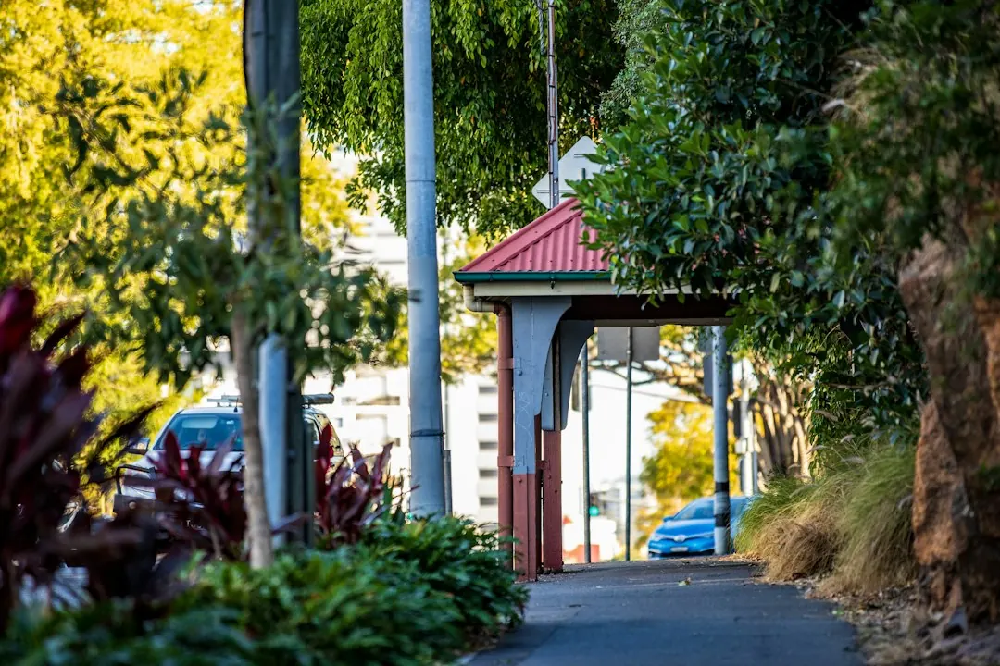

A retaining wall project starts with the ground to be retained, the intended garden use, access and anything above the wall. Boulder, sandstone, concrete sleeper and timber sleeper systems suit different construction discussions. Replacement work may also involve removal, drainage, garden repairs and protection of nearby paths or planting. Before accepting a quote, confirm design responsibilities, approval questions, drainage, inclusions, exclusions, price and proposed start arrangements.
For homeowners comparing retaining walls brisbane options, the practical decision is how the wall, drainage, access and surrounding garden will work together.
Retaining Walls Brisbane Explained
Boulder Walls Brisbane presents the project as a choice between the ground that needs retaining and the way the garden will be used. A level lawn, raised garden bed, replacement wall or terraced planting area can require different conversations before a material is selected.
Natural boulders create an irregular, planted-garden appearance and leave room to place large stones. Sandstone can provide even rows of blocks or a rougher stone finish. Concrete sleepers sit between posts, while timber sleepers create a different garden edge. The wall face is only one part of the decision. Ground conditions, drainage and access need to be discussed alongside appearance.
- Describe the height change and the space you want to use.
- Identify anything above the wall, such as a driveway or another structure.
- Explain whether the work is new construction, replacement or terracing.
- Note nearby fences, paths, lawns or established planting that should remain.
Compare the main wall systems
Material selection should follow the job rather than a front-face price alone. A boulder wall may suit a natural garden setting, while sandstone offers a more consistent block pattern. Sleeper systems bring posts, connections and drainage into the discussion, so the proposed construction method should be clear before work begins.
Use the comparison as a starting point, not as a substitute for a site assessment. A narrow route, steps, turns or overhead obstructions can affect how materials reach the work area. A wide street does not necessarily mean there is a clear route behind the house.
For a sloping garden with a proposed lawn or raised bed, describe the finished level as well as the existing drop. That helps the discussion cover the retained ground, the usable area above it and the route for materials. If the garden is being divided into several levels, ask whether the walls, paths and drainage should be planned together.
- Ask how the chosen system responds to the ground and proposed levels.
- Confirm whether excavation, earthworks and removal are included.
- Ask what finish and garden reinstatement are included after construction.
Drainage, approvals and existing walls
Water behind a wall needs to be considered in its design. Ask what drainage the quote includes, where the water will go and whether the proposed outlet is lawful. Pooling, staining or soil loss should be described during the initial discussion. Gaps between stones do not, by themselves, show that drainage is adequate.
Approval questions should be checked against the complete proposal. The published guidance notes that height is only one consideration. Loads above the wall, nearby buildings or walls and pool fencing can also affect whether building approval is needed. A licensed building certifier can check the full proposal before it is treated as exempt.
An existing wall may conceal buried footings or drainage. Photos can begin the conversation, but a suitably qualified professional needs to assess what cannot be seen. If rebuilding is required, ask how removal and temporary support will be handled. The condition of the old structure and the surrounding garden should be recorded before demolition is discussed.
Prepare a quote that can be compared
A useful enquiry includes the suburb, the result you want, approximate dimensions and how the work area can be reached. Wider photographs showing the wall, higher ground and route from the street are more useful than close-ups alone. Include nearby paths, fences, lawns, established planting and structures you want protected.
For replacement work, removal and disposal of the old wall may be substantial parts of the scope. Ask who handles design, approval, construction and any necessary inspections. Request the inclusions and exclusions in writing, including drainage, excavation, access arrangements, path protection and repairs after the work.
Before comparing two proposals, place the same questions beside each one: what is being removed, how will water leave the wall, who handles approval, and what happens to damaged garden areas? A lower visible construction figure may not describe the same access, drainage, disposal or reinstatement work as another proposal.
- Describe the change you need in the yard.
- Show the whole site and approximate dimensions.
- Discuss workable materials and whether assessment is needed.
- Confirm the price, inclusions and proposed start arrangements.
Who this guide applies to
This guide is for Brisbane homeowners planning a new retaining wall, replacing an old structure, creating usable garden levels or comparing boulder, sandstone and sleeper options. It is also relevant when fencing, paths, lawns or planting sit close to the proposed work.
The useful question is not simply which material looks best. Consider the access route, the slope, nearby structures, drainage observations and the garden use you want after construction. Those details give a provider a clearer starting point even when the final wall system has not been chosen.
Readers comparing another practical planning guide can also review the companion retaining wall planning guide before preparing an enquiry.
Start with the problem rather than a preferred product name. A leaning timber wall, an unusable drop in the garden and a planned raised bed each call for different questions about access, drainage, levels and the surrounding property.
- Describe the outcome. Explain whether you need a new level, a replacement wall or a more usable garden area.
- Show the site. Provide wider views of the wall, higher ground, access route and nearby structures.
- Discuss the system. Ask which materials and construction approach suit the ground, drainage and intended finish.
- Confirm the proposal. Check the price, inclusions, exclusions, approvals, inspections and proposed start arrangements in writing.
| Option | Useful starting question | Details to confirm |
|---|---|---|
| Boulder | Would a natural rock appearance suit the garden? | Stone placement, ground retention and drainage |
| Sandstone | Is an even block face or rougher finish preferred? | Garden levels, access and proposed construction |
| Concrete sleeper | Does a post-and-sleeper system suit the site? | Posts, connections, drainage and finish |
| Timber sleeper | Is a timber garden edge appropriate? | Ground conditions, drainage and future care |
| Replacement | What remains from the old wall? | Removal, disposal, temporary support and repairs |
Common questions
Does a retaining wall always need building approval? Not necessarily. The published guidance says height is only one consideration, and loads above the wall, nearby buildings or walls and pool fencing can also matter. A licensed building certifier should check the full proposal before it is treated as exempt.
What should drainage questions cover? Ask what drainage is included, where water will go and whether the outlet is lawful. Describe pooling, staining or soil loss, and do not assume gaps between stones prove the drainage is adequate.
Can an old wall be assessed before rebuilding? Yes, a suitably qualified professional can assess what remains hidden and explain the available options. Photos help start the discussion, but they cannot show buried footings or drainage.
What should be included in a retaining wall quote? Confirm design, approval responsibilities, construction, drainage, excavation, removal and disposal where relevant. Also check access arrangements, protection of paths and repairs to gardens or surrounding areas.
This guide covers material selection, site access, drainage, approval questions and quote preparation for retaining wall projects in Brisbane and South East Queensland.